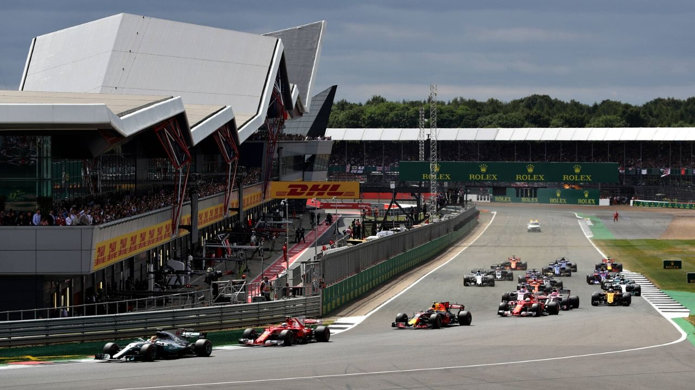

Formula 1 isn’t just about the speed of the cars or the skill of the drivers — it’s also about the incredible variety of circuits that shape each season. From historic tracks that have defined generations of racing to modern, high-tech arenas pushing the limits of design, each circuit offers its own unique challenge. Every curve, chicane, and straight tells a story of engineering, bravery, and precision.
Across six continents, F1 circuits bring fans together to witness the pinnacle of motorsport. Some are known for their glamour and prestige, like Monaco’s tight city streets, while others like Monza and Silverstone echo with the roar of history. Whether nestled in the forests of Belgium or glowing under the Singapore lights, each race track adds a new chapter to Formula 1’s global legacy.

Monaco Circuit
The jewel in Formula 1’s crown, Monaco’s narrow streets, tight corners, and unforgiving barriers make it one of the most challenging and prestigious races of the season

Silverstone Circuit
Known as the birthplace of Formula 1, Silverstone combines high-speed corners with rich racing heritage and passionate fans.

Suzuka Circuit
Featuring a rare figure-eight layout, Suzuka tests both car balance and driver precision — a true classic of the calendar.
Formula 1 circuits vary dramatically in layout, atmosphere, and purpose. Street circuits demand precision and bravery, while permanent race tracks reward smooth rhythm and consistency. Some are renowned for their breathtaking speed, others for their technical complexity — but all play a crucial role in testing the world’s best drivers and machines.
| Circuit Name | Circuit Length | Number of Laps in a GP | Race Distance | Lap record (race) |
|---|---|---|---|---|
| Monaco (Monaco) | 3.337 km | 78 | 260.286 km | 1:14.260 by Max Verstappen (2018) |
| Silversone (United Kingdom) | 5.891 km | 52 | 306.198 km | 1:27.097 by Max Verstappen in 2020 |
| Suzuka (Japan) | 5.807 km | 53 | 307.471 km | 1:30.983 by Lewis Hamilton (2019) |